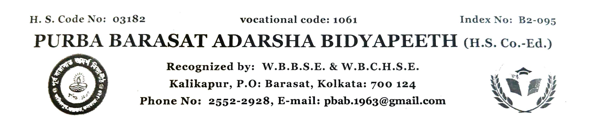

এতদ্বারা পূর্ব বারাসাত আদর্শ বিদ্যাপীঠ (উঃ মাঃ কো-এড)-এ ২০২৭ শিক্ষাবর্ষে বাংলা মাধ্যমে পঞ্চম শ্রেণি (Class V) ও ষষ্ঠ শ্রেণিতে (Class VI) ভর্তির জন্য ছাত্র-ছাত্রীদের কাছ থেকে নির্দিষ্ট বয়ান অনুযায়ী আবেদনপত্র আহ্বান করা হচ্ছে। অভিভাবক ও ছাত্র-ছাত্রীদের নিম্নলিখিত সময়সূচী ও নিয়মাবলী যথাযথভাবে অনুসরণ করার নির্দেশ দেওয়া হচ্ছে:
| বিবরণ | সময়সূচী ও তথ্য |
|---|---|
| অনলাইন আবেদনপত্র পূরণের সময়সীমা | ৫ই নভেম্বর ২০২৬ থেকে ২৫শে নভেম্বর ২০২৬ (বিদ্যালয়ের নির্দিষ্ট অনলাইন পোর্টালের মাধ্যমে: www.pbab.in) |
| মুদ্রিত ফর্ম ও নথিপত্র অফলাইনে জমা | ১৩ই নভেম্বর ২০২৬ থেকে ২৮শে নভেম্বর ২০২৬ সময়: বেলা ১১:৩০ টা থেকে দুপুর ১:০০ টা পর্যন্ত (বিদ্যালয়ের অফিস কাউন্টার) আবেদন ফি: ₹১০০/- (একশত টাকা মাত্র) — প্রক্রিয়াকরণ বাবদ, মুদ্রিত ফর্ম জমা দেওয়ার সময় বিদ্যালয়ের অফিস কাউন্টারে প্রদেয় (অফেরতযোগ্য)। |
| শ্রেণি (বাংলা মাধ্যম) | প্রয়োজনীয় জন্মতারিখের ব্যাপ্তি |
|---|---|
| পঞ্চম শ্রেণি (Class V) | ০২/০১/২০১৬ থেকে ০১/০১/২০১৭ (উভয় দিন অন্তর্ভুক্ত) |
| ষষ্ঠ শ্রেণি (Class VI) | ০২/০১/২০১৫ থেকে ০১/০১/২০১৬ (উভয় দিন অন্তর্ভুক্ত) |
বিশেষ দ্রষ্টব্য: ফর্ম জমা দেওয়ার সময় মূল নথিপত্র (Original Documents) সাথে রাখতে হবে যাচাইকরণের জন্য। অসম্পূর্ণ আবেদনপত্র বা নির্দিষ্ট সময়সীমা অতিক্রান্ত হওয়ার পর কোনো আবেদন গ্রহণ করা হবে না।
আসনসংখ্যার তুলনায় আবেদনকারীর সংখ্যা বেশি হলে লটারির মাধ্যমে ছাত্র-ছাত্রী নির্বাচন করা হবে। লটারির তারিখ, ফলাফল প্রকাশের তারিখ এবং চূড়ান্ত ভর্তি প্রক্রিয়ার তারিখ যথাসময়ে জানিয়ে দেওয়া হবে।